Όλα τα Άρθρα & Αναλύσεις
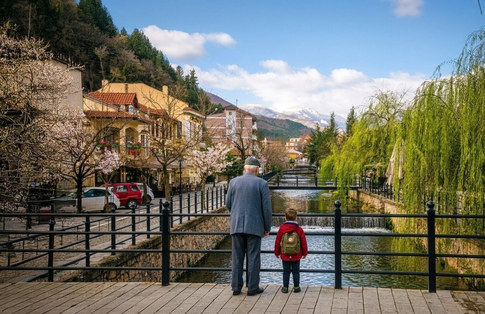
Πίσω από τις «πρώτες θέσεις» και την ουσία για τον τόπο μας
Πίσω από τις συζητήσεις για το ποιος δικαιούται να κάτσει πού, υπάρχει η αληθινή Π.Ε. Φλώρινας που αγωνιά. Είναι λυπηρό να βλέπουμε την πολιτική σκοπιμότητα να επισκιάζει το μέλλον του τόπου μας.
Διαβάστε το άρθρο →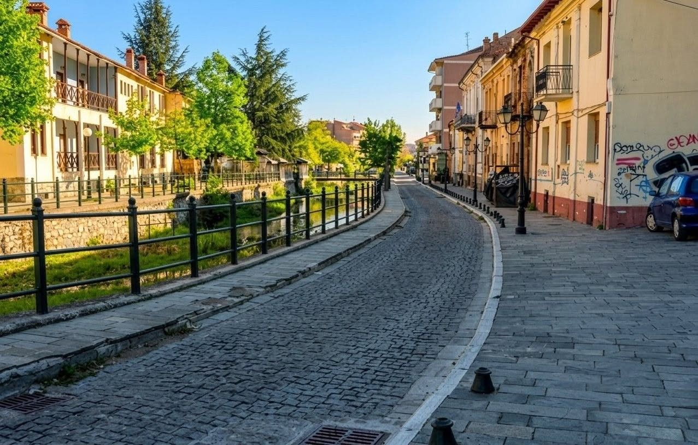
Η Φλώρινα της δημιουργίας και της αισιοδοξίας
Η Φλώρινα δεν είναι μόνο οι δυσκολίες της. Είναι οι άνθρωποί της, το πείσμα τους και η ομορφιά της φύσης μας. Έχουμε έναν ζωντανό τόπο γεμάτο δυνατότητες.
Διαβάστε το άρθρο →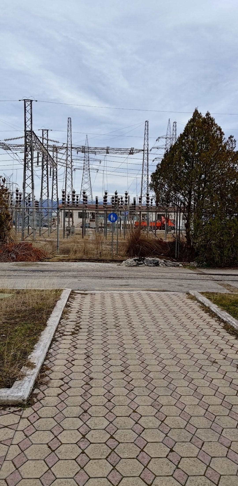
ΕΣΠΑ, Δίκαιη Μετάβαση και οι ανάγκες του τόπου μας
Οι συζητήσεις για το ΕΣΠΑ είναι θετικές, αρκεί τα χρήματα να πιάσουν τόπο άμεσα. Χρειάζεται συνεργασία και τεχνική τεχνογνωσία για να μετατραπούν οι πόροι σε πραγματικά έργα.
Διαβάστε το άρθρο →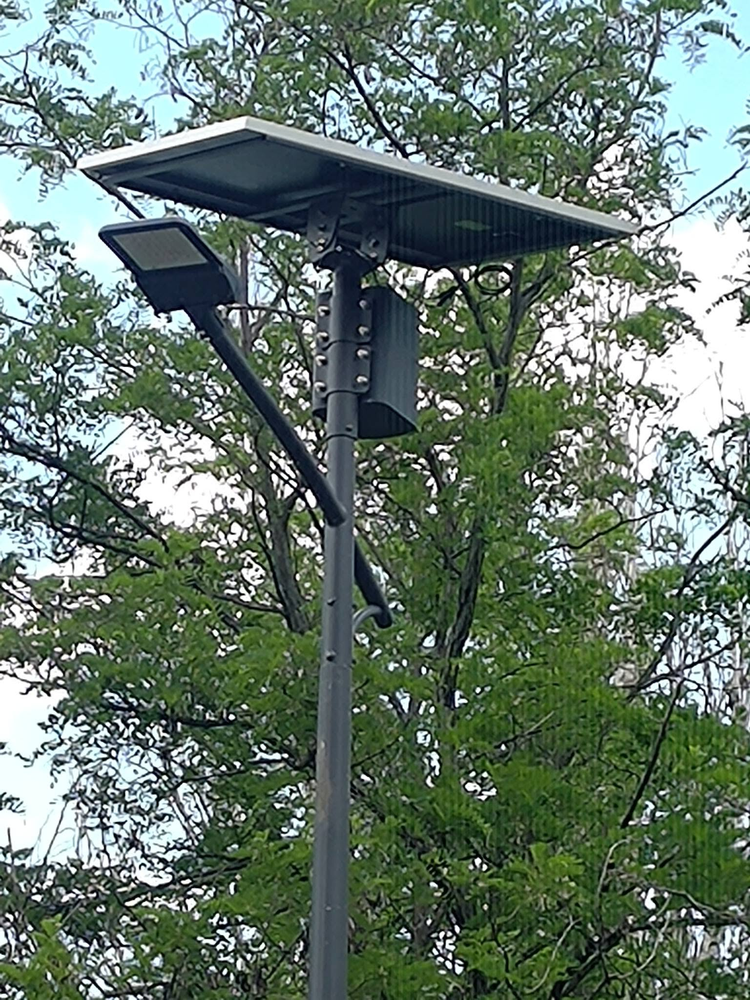
Αυτόνομα ηλιακά συστήματα αντί για απλές λάμπες LED
Μέσω ΕΣΠΑ, 1.000 ηλιακά φωτιστικά εξοικονομούν 56.000€ κάθε χρόνο για τον Δήμο, με μηδέν επιβάρυνση για τους δημότες. Έργα ουσίας με καθαρούς αριθμούς.
Διαβάστε το άρθρο →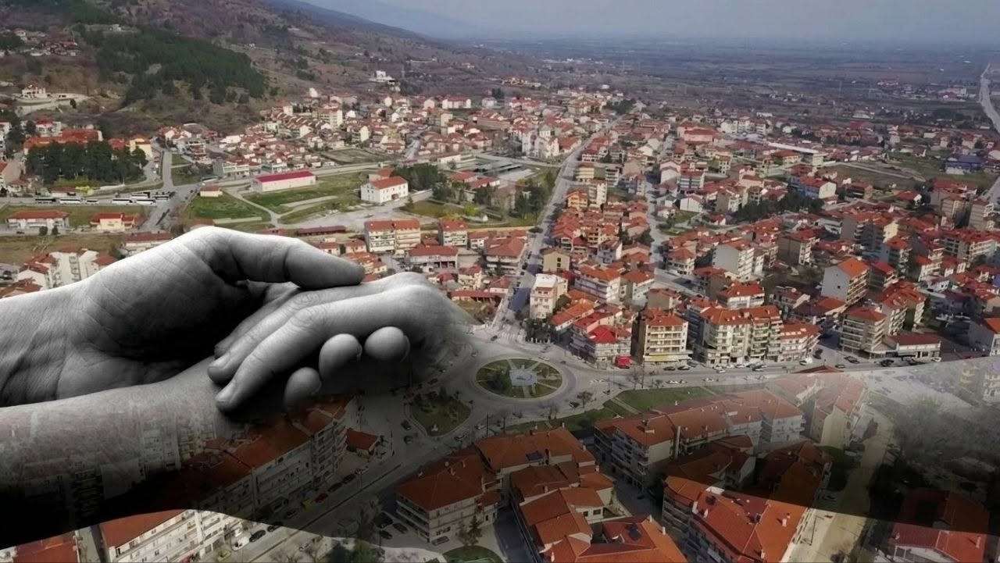
Τι μας κρατάει τελικά πίσω σε αυτόν τον τόπο;
Πολλοί νέοι ανησυχούν για το αύριο και είναι διστακτικοί να μιλήσουν. Για να πάει ο τόπος μπροστά, πρέπει να βγούμε στην πρώτη γραμμή με νέες ιδέες, συνεργασία και κοινή λογική.
Διαβάστε το άρθρο →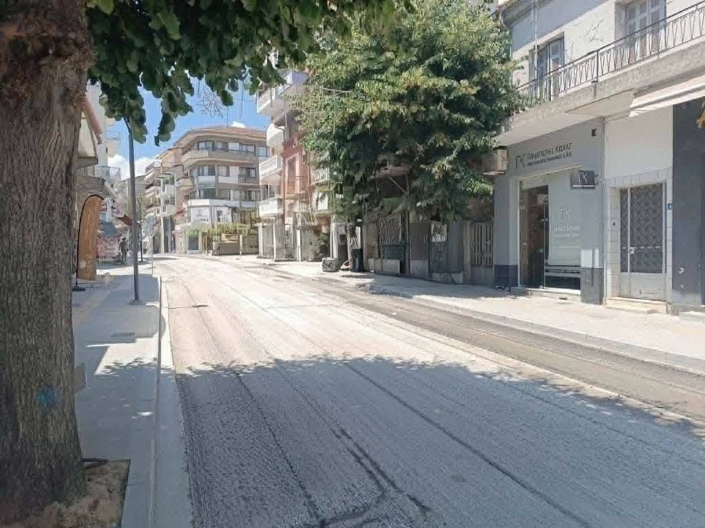
Όταν η κοινωνία βγαίνει μπροστά...
Ο απλός πολίτης αποκτά ξανά φωνή. Όταν οι συνδημότες μας συζητούν ανοιχτά και προτείνουν λύσεις με κοινή λογική, ο δρόμος για το καινούργιο έχει ήδη ανοίξει.
Διαβάστε το άρθρο →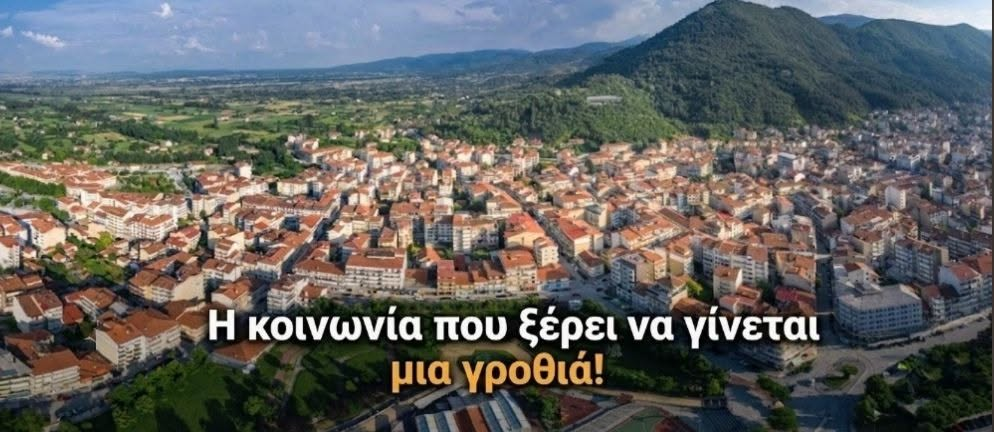
Η κοινωνία που ξέρει να γίνεται μια γροθιά!
Η αληθινή αγάπη της τοπικής μας κοινωνίας, η ανάγκη για ουσία απέναντι στις εντυπώσεις και οι 4 βασικοί πυλώνες για να παλέψουμε για το αύριο του τόπου μας.
Διαβάστε το άρθρο →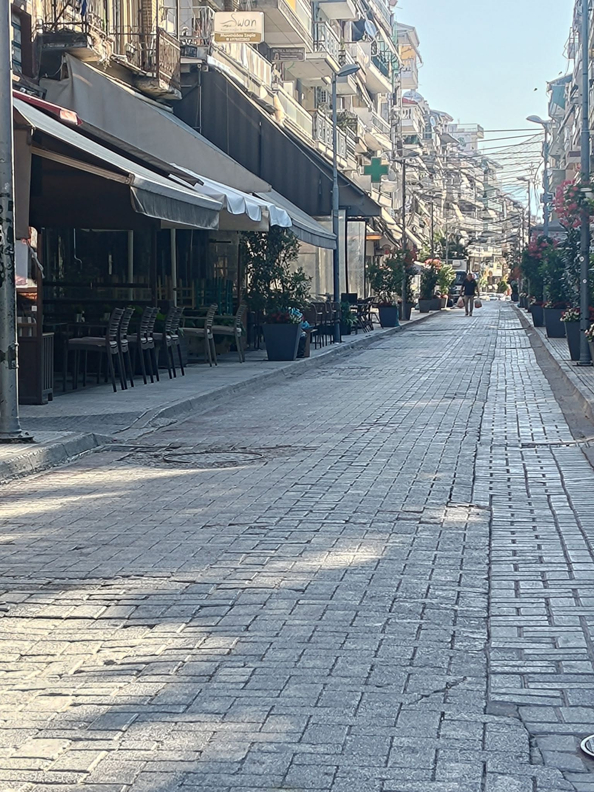
Η πραγματικότητα της αγοράς και οι άμεσες λύσεις
Οι βιτρίνες δεν γεμίζουν τα ταμεία. Η τοπική αγορά χρειάζεται πραγματική στήριξη, μείωση της ανεργίας και εφαρμόσιμες λύσεις από την πρώτη κιόλας μέρα.
Διαβάστε το άρθρο →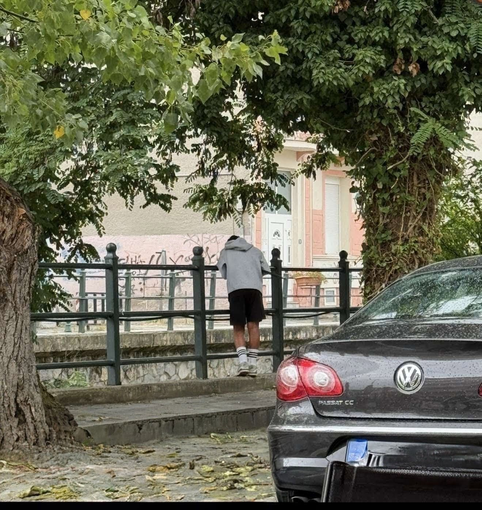
Πόσα ακόμα από τα δικά μας παιδιά θα αφήσουμε να φύγουν;
Η μεγαλύτερη επένδυση είναι η εμπιστοσύνη στη νέα γενιά. Ώρα να δώσουμε χώρο στα φρέσκα μυαλά να δημιουργήσουν και να ριζώσουν στον τόπο τους.
Διαβάστε το άρθρο →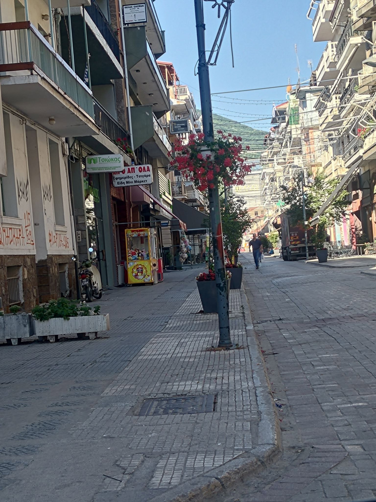
Φροντίζουμε την εικόνα, αλλά χωρίς υποδομές, ποιος θα τη χαρεί;
Όμορφες οι αισθητικές παρεμβάσεις, αλλά ο τόπος χρειάζεται σφυγμό: αληθινές αναπτυξιακές υποδομές και πραγματικές θέσεις εργασίας για να κρατήσουμε τη νέα γενιά.
Διαβάστε το άρθρο →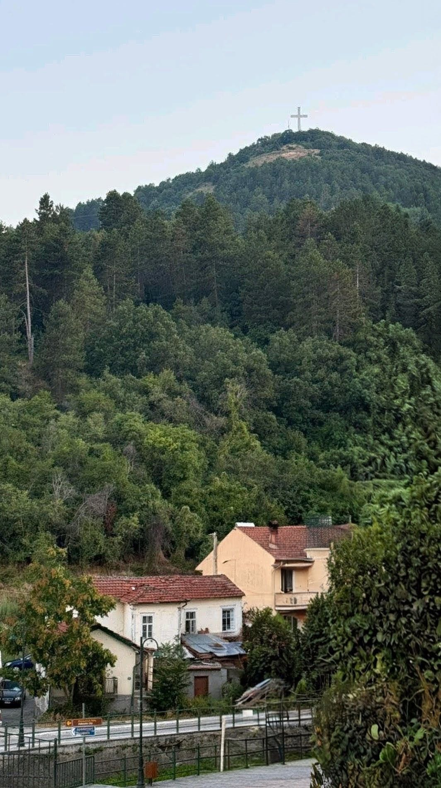
«Έξυπνες πόλεις» και ψηφιακές βιτρίνες...
Όμορφες οι τεχνολογικές ανακοινώσεις, αλλά η ουσία κρύβεται στην ολοκλήρωση των έργων και στη δημιουργία θέσεων εργασίας για τους τεχνικούς του τόπου μας.
Διαβάστε το άρθρο →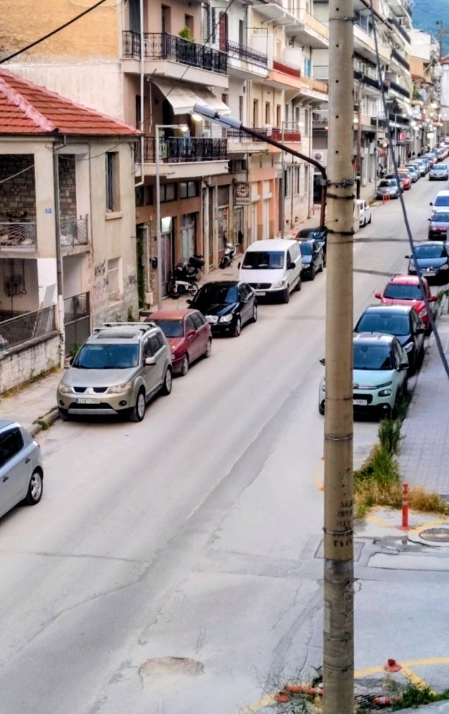
Όταν δίνεις λύσεις, δεν υπάρχουν παρεξηγήσεις!
Για να ελέγξεις τον πολίτη, πρέπει πρώτα να του δώσεις εναλλακτικές. Χωρίς θέσεις πάρκινγκ, η τοπική αγορά και οι οικογένειες χρειάζονται στήριξη και ουσιαστικές υποδομές.
Διαβάστε το άρθρο →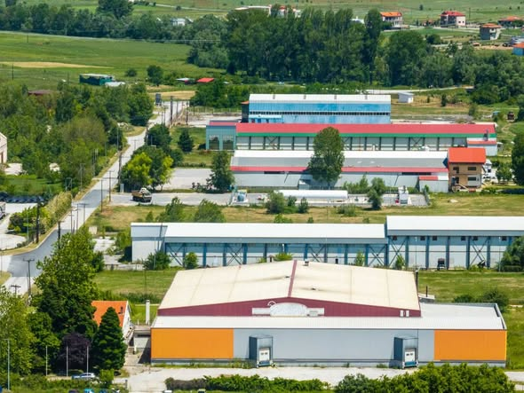
Η Φλώρινα της δουλειάς και της προοπτικής!
Η αξιοποίηση της ΒΙΠΕ, η Δίκαιη Μετάβαση και τα συγκριτικά πλεονεκτήματα του τόπου μας, όπως τα Data Centers, μπορούν να φέρουν μόνιμες δουλειές και προοπτική.
Διαβάστε το άρθρο →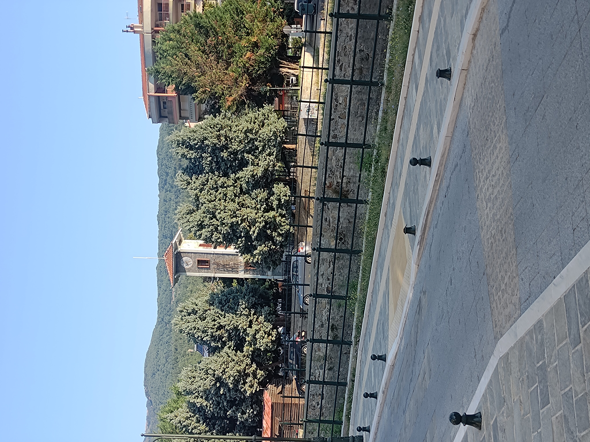
Οι αθόρυβοι αγωνιστές που κρατούν τον τόπο μας όρθιο!
Μέσα στο τρέξιμο της καθημερινότητας, αξίζει να σταθούμε για λίγο και να κοιτάξουμε γύρω μας. Να αναλογιστούμε όλους εκείνους τους ανθρώπους της διπλανής πόρτας, που προσφέρουν αθόρυβα στον τόπο μας...
Διαβάστε το άρθρο →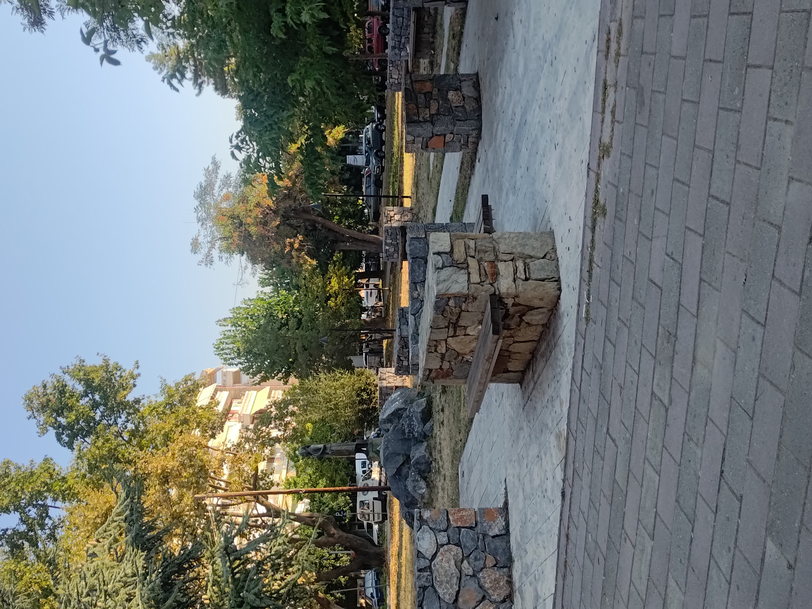
Η πιο επικίνδυνη συνήθεια είναι να πιστέψουμε ότι «τίποτα δεν αλλάζει»
Όταν συνηθίζεις στη στασιμότητα, σταματάς να διεκδικείς. Όταν μάθουμε να συμβιβαζόμαστε με τα λίγα, ξεχνάμε τι αξίζουμε... Ο τόπος μας δεν είναι καταδικασμένος να μένει πίσω.
Διαβάστε το άρθρο →
Το τίμημα των επιλογών μας... Πώς έμεινε πίσω ο τόπος μας;
Ο τόπος μας πληρώνει το τίμημα των δικών μας επιλογών. Πλήρωσε την ανοχή μας και το ότι συνηθίσαμε στα λίγα. Η αλλαγή στη νοοτροπία μας είναι το μόνο πράγμα που μπορεί να δώσει ξανά ανάσα...
Διαβάστε το άρθρο →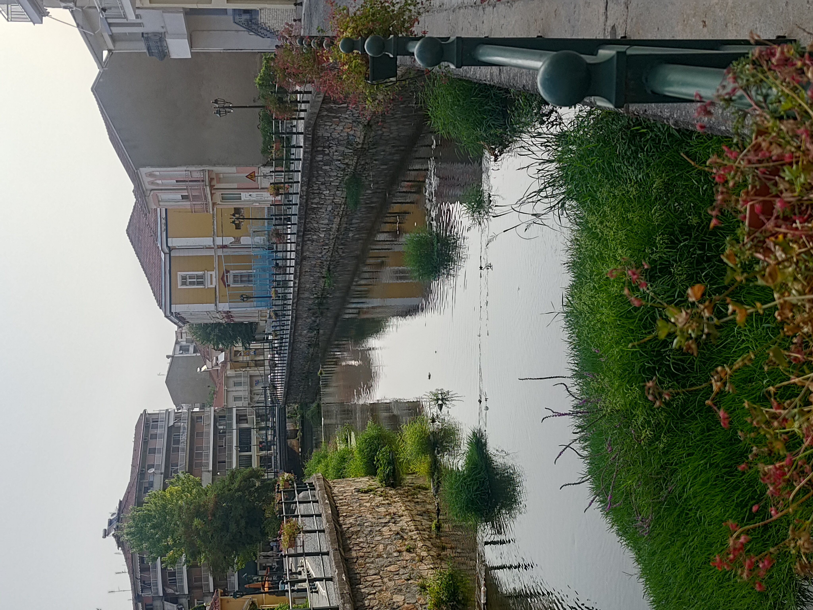
Εικόνες που πονούν, αλήθειες που πρέπει να ειπωθούν
Η Φλώρινα δεν έχει ανάγκη από άλλες φωτογραφίες βιτρίνας. Χρειάζεται πραγματική φροντίδα, σύγχρονες ιδέες και ένα πλάνο που θα φέρει κόσμο και θα κρατήσει τα παιδιά μας στον τόπο τους...
Διαβάστε το άρθρο →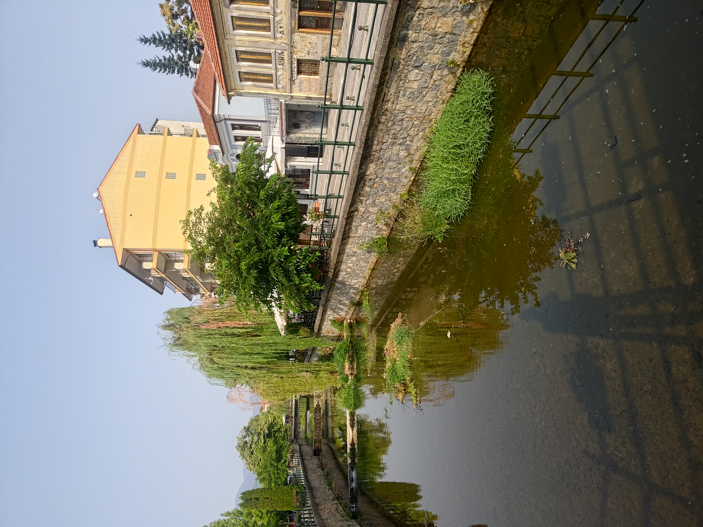
Φλώρινα: Όταν η τοπική αγορά στεγνώνει δεν φταίει η γκρινιά...
Η αγορά δεν κινείται με ευχολόγια. Κινείται με ρευστότητα και παραγωγή. Χρειάζονται στοχευμένα εργαλεία και τεχνικός σχεδιασμός που θα κρατήσουν το ευρώ του Φλωρινιώτη στον τόπο του...
Διαβάστε το άρθρο →
Όσο μένουμε ενωμένοι και ειλικρινείς, τίποτα δεν θα πάει χαμένο...
Όσο δύσκολοι κι αν είναι οι καιροί, όταν υπάρχει ειλικρίνεια και ενότητα, πάντα γεννιέται η ελπίδα. Αυτοί οι άνθρωποι που μάχονται καθημερινά σιωπηλά είναι η πραγματική μας δύναμη...
Διαβάστε το άρθρο →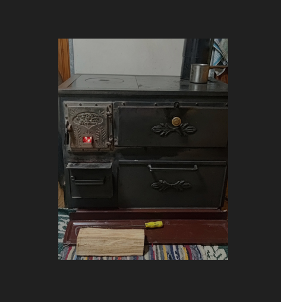
Όταν η θέρμανση γίνεται αβεβαιότητα, η κοινωνία μας δοκιμάζεται...
Με εφτά μήνες βαρύ χειμώνα μπροστά μας, τα οξυμένα προβλήματα με την τηλεθέρμανση, το φυσικό αέριο και τις αντλίες θερμότητας αναδεικνύουν την ανάγκη για πραγματικό σχεδιασμό...
Διαβάστε το άρθρο →